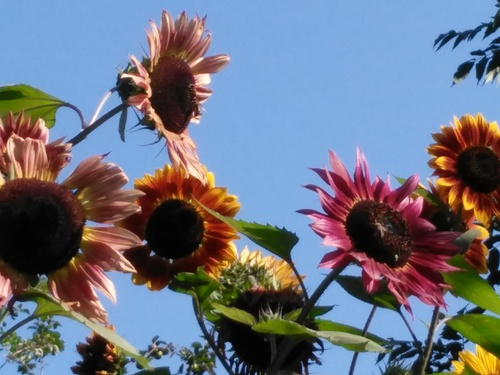

Je vous propose un petit gîte, La Grangette, située dans le hameau d’Eychenne, à 6 km de Massat , dans les montagnes Pyrénéennes. Il y a vingt ans que je suis arrivée ici dans la vallée de Liers, au-dessus de Massat, dans le Couserans, avec ma fille de deux mois. Il y avait deux ampoules et une prise électrique dans la maison mais pas d’eau. Je faisais la vaisselle sur une palette au jardin avec mon bébé sur le dos, la cuisine sur un feu dans une grande cheminée. Je n’étais pas seule. Les voisines faisaient pareil. Nous étions heureux de vivre dans la nature, entourés par la forêt et les animaux.
